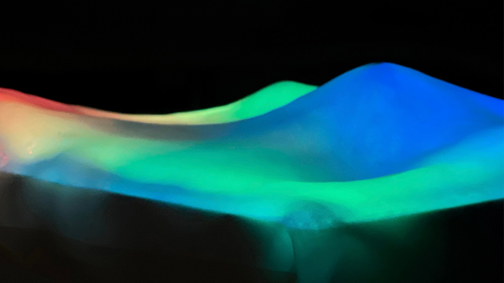
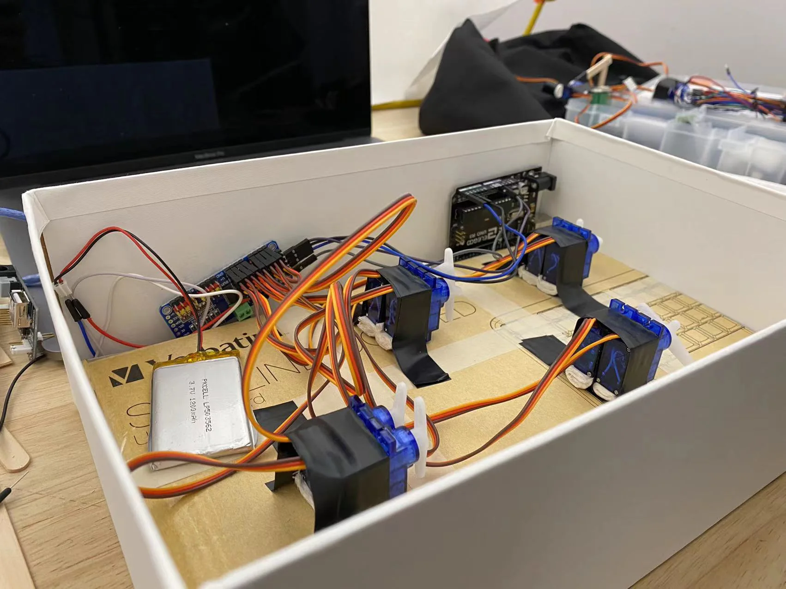
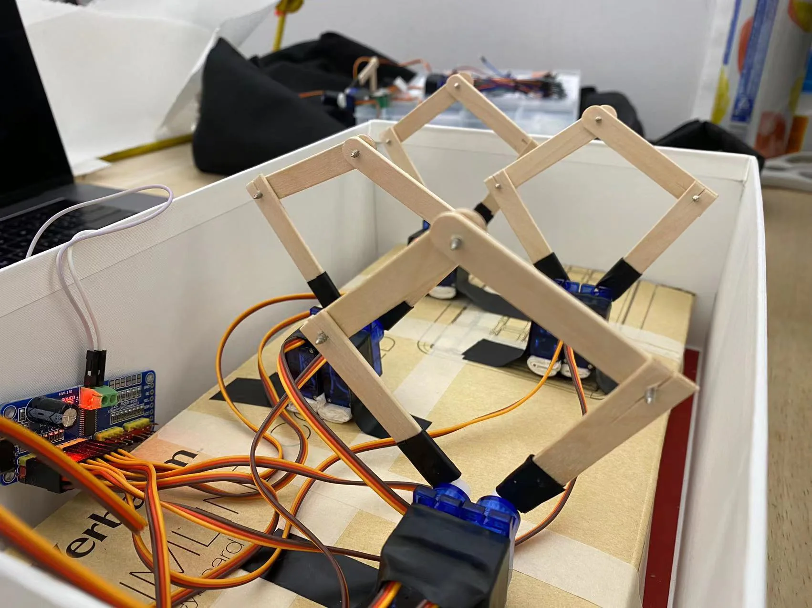
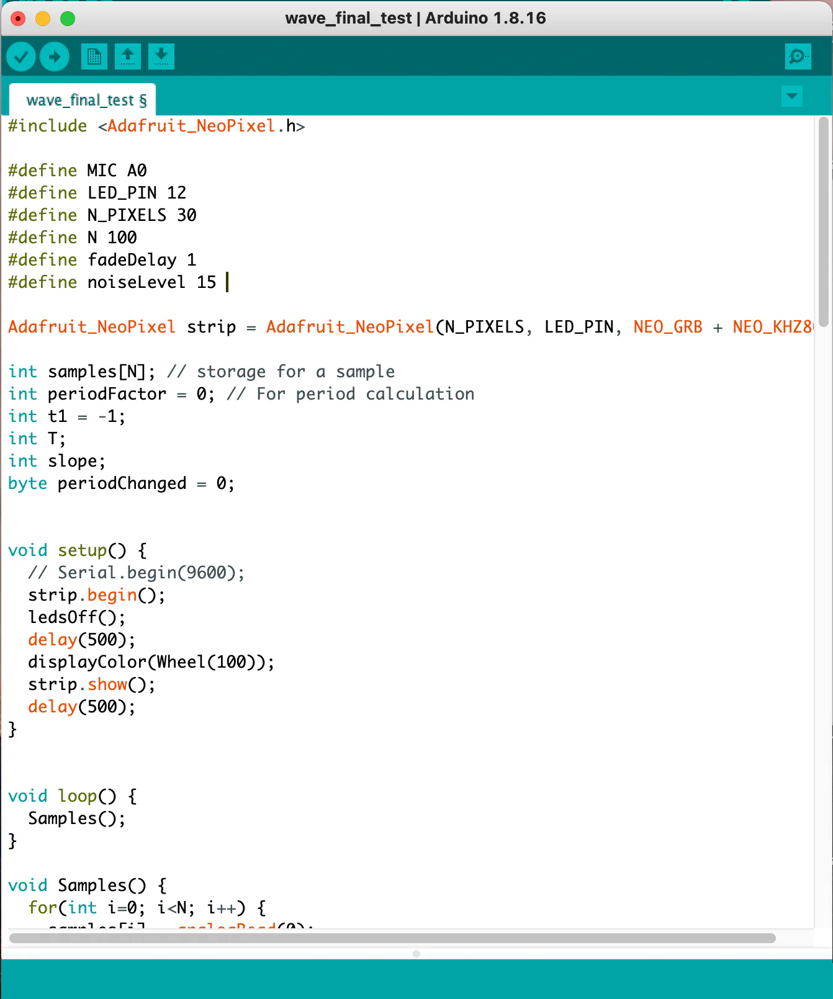
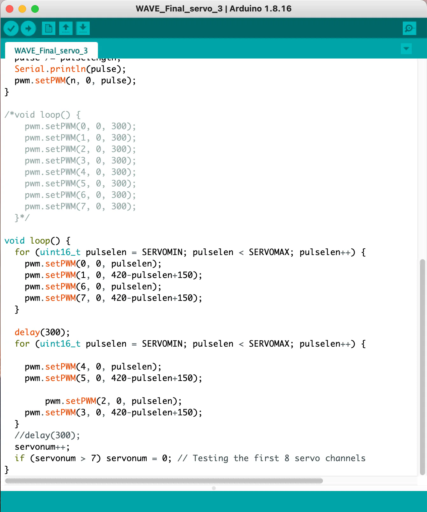
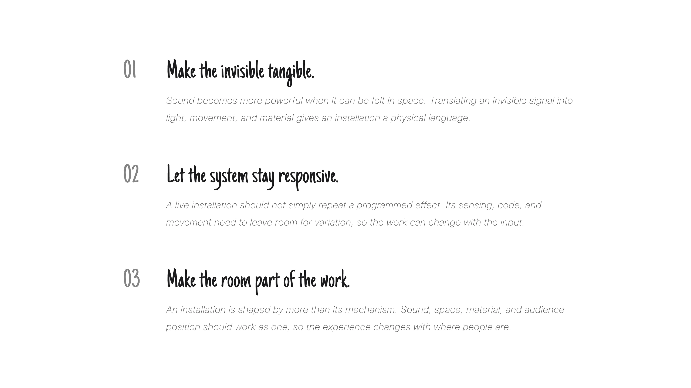

ART INSTALLATION · 2021
Wave
How can sound become something we see, feel, and share in space?
Wave transforms music into wave rhythms and shifting light, moving between physical material, digital logic, and live experience.
- Role
- Interaction Designer
- Scope
- Physical–Digital Experience
- Team
- Independent Project
Concept
Make sound visible through movement.
Wave began with a simple question: how can sound become something people see, feel, and share in space? I translated the rise and fall of music into a visual language of shifting light, repeated motion, and responsive material.

Physical System
Give the rhythm a physical body.
The physical system turns that language into a working structure. I first mapped the mechanism that drives the movement, then tested materials, scale, and light to understand how the wave could be read from different positions.



Control System
Keep the installation responsive.
Code connects sound input to the installation’s timing, light, and motion. Its role is not to add another layer, but to keep the physical system responsive as the rhythm changes.


Installation
Let the system become an experience.
The installation brings sound, movement, and light into one spatial event. The images show the finished form; the video captures how the system changes when sound becomes movement.
Reflection
Design the system, not just the effect.
Wave taught me to design the relationship between material, code, and audience. Material gave sound a body. Code kept the system responsive. Together, they turned sound into a shared spatial experience.
